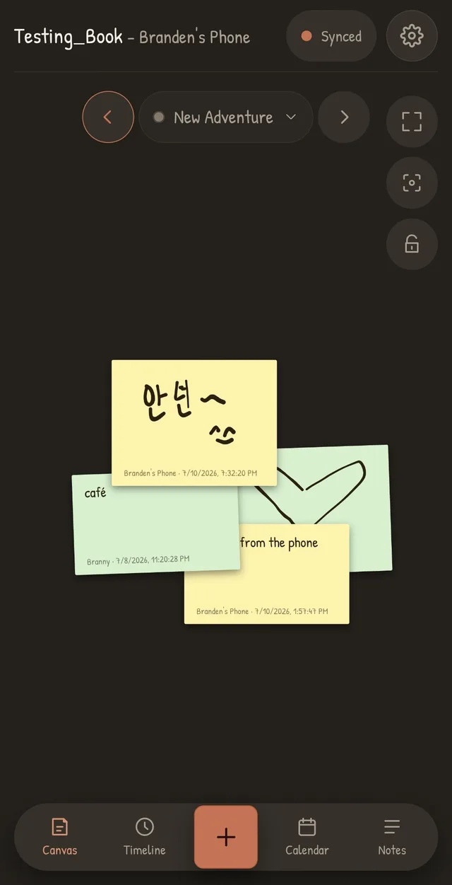
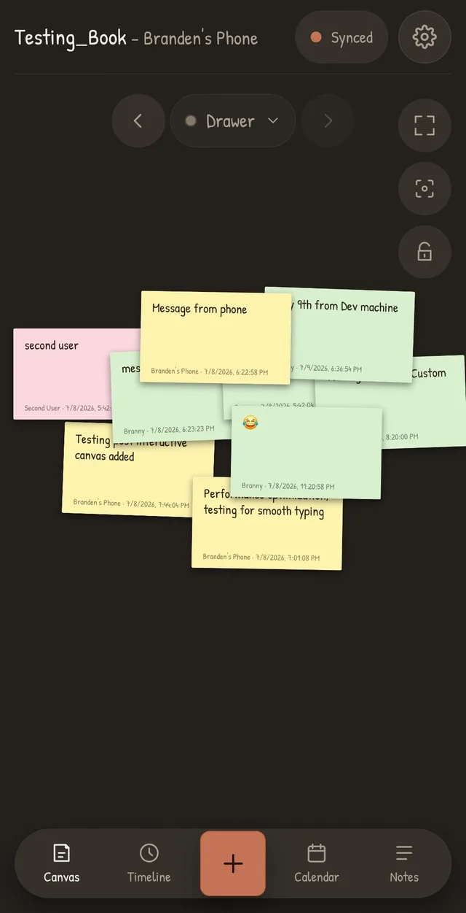

A private scrapbook for two. or more.
No accounts. No feed. No server. Leave photos, sticky notes, and doodles for each other on a shared canvas - synced through a folder you already have, like Dropbox or Drive.
In development - coming to Windows, macOS & Linux, Android & iOS.
Like notes on the fridge
Open the book to a shared canvas. Pin a photo from your walk. Scribble a doodle. Leave a sticky note where they'll find it with their morning coffee. Things overlap, tilt, pile up.
It's not a chat, and there's no scroll to keep up with. Nothing asks to be answered. It's just a place where small things accumulate, until one day you look back and reminisce
One book, three views
Canvas
the heart of it
Both of you place photos, notes, and doodles anywhere - nudge them, tilt them, stack them. Where you put things stays put, on both your screens. The app will sync both of your changes, without conflicts. Group certain notes together somewhere on the canvas, or create a new blank canvas for each new event
Timeline
builds itself
Everything you've ever added, newest first, grouped by day. Filter by person or by type. Zero curation effort - it's the scrapbook keeping its own index.
Calendar
counts the days
A monthly calendar showing which days something new was added - look back at a certain days notes or see a summary of which days had the most activity. Decorate dates with short notes and stickers: anniversaries, countdowns, or whatever you want a reminder of.
A peek inside
Real screenshots will land here as the beta firms up. Until then, these placeholders are keeping their seats warm.
-

doodles travel too -
Screenshot: desktop canvas — photos, notes & doodles
the canvas, on a screen -
Screenshot: timeline view
everything, day by day -

notes pile up -
Screenshot: calendar with decorations
anniversaries & countdowns
Why it's different
Your memories are yours, you don't have to worry about our server security because there is no server.
-
private by design
No accounts, no telemetry, no analytics, no ads. Your scrapbook is just a shared folder, with no server in the middle. You can setup your own server or use a trusted third-party service like Dropbox or Google Drive for storage
-
works offline
Add things on a plane, in a tunnel, at your grandmother's. Your partner sees them whenever the folders next sync, which will happen automatically the next time you are online, you never both need to be online at the same time.
-
yours, permanently
A book is a plain folder you can back up, copy, and open in ten years. No subscription can take your memories away. Our Yohang is not a replacement for your photos folder, in fact you can export your scrapbook pages as images and store them elsewhere if you want.
-
free, forever (if you want)
It runs on your storage, so there's nothing for us to charge for. Your storage, your data. Paid version with optional convenience features (hosted storage) to come, but all core features are free. Any paid features can be used for free by those who have a little technical know-how.
How sharing works
Once your storage is linked, there's no onboarding to speak of. All you have to do is share an invite code. If you receive an invite code then all you need to do is input it, and you're ready to add your own notes
-
1
Make a book
One of you creates it, and receives an invitation code. Use any cloud storage service you like, with quick setup available for most popular services (Dropbox, Google Drive)
-
2
Send the invitation
Your partner just need to input the invitation code, and they will be connected.
-
3
They open it
After opening they will select a name and they're in. That's it. Any changes they make will be reflected in your scrapbook and saved via your shared folder without any complicated setup. No creating an account or a password.
no accounts, no passwords
FAQ
What platforms will it run on?
During the initial beta, it will run on Windows, Linux, and Android. Full release is planned for Windows, macOS, Linux, Android, and iOS. The app is built with being cross-platform in mind, with a goal of feature parity across all platforms.
What about sync conflicts?
You never deal with them. No "conflicted copy" duplicates, no merge dialogs — if you both move things at once, the code quietly works it out on its own.
What's coming later?
Roadmap to come.